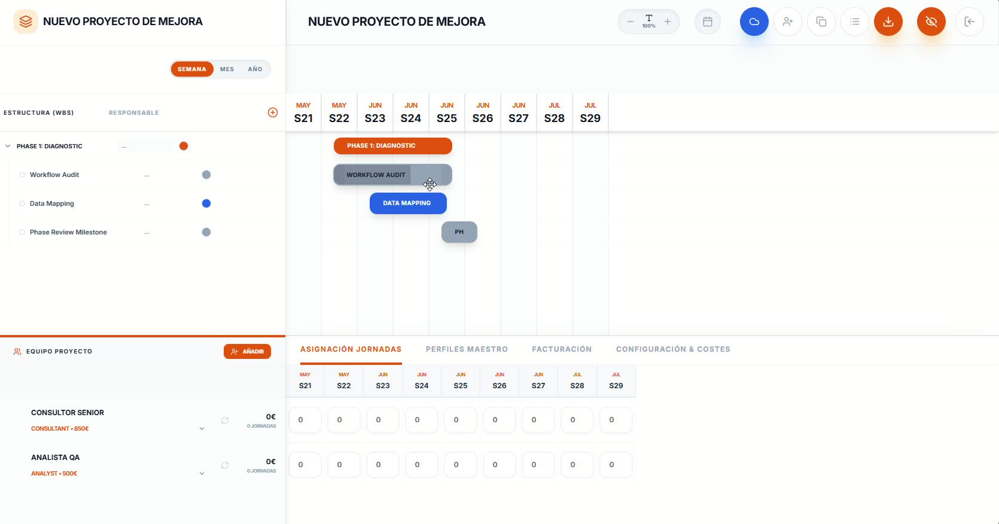
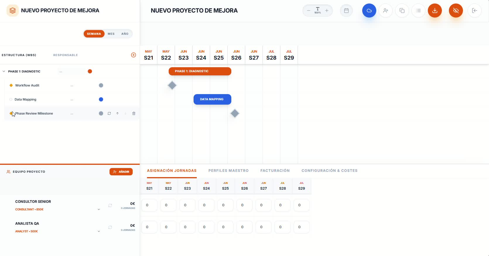
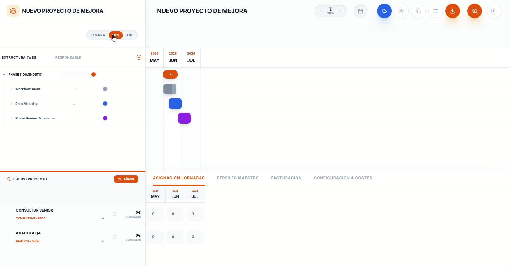
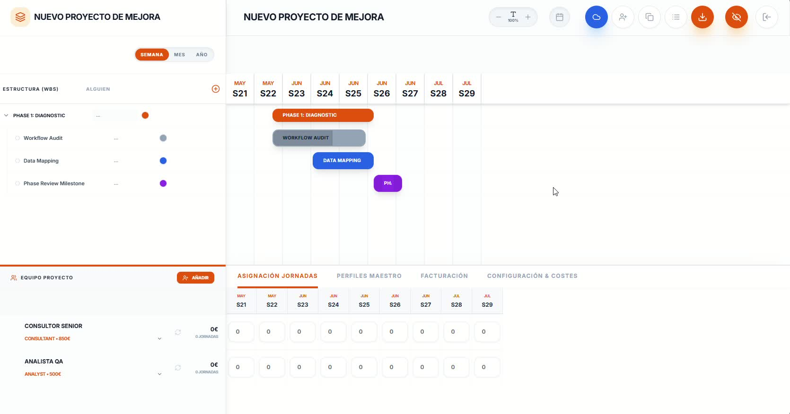

Timing
Herramienta de planificación y control de proyectos de mejora continua. Organiza fases, tareas e hitos en un Gantt interactivo y mantén el control total del equipo, las jornadas y los costes del proyecto.
Explorar la Interfaz
Funcionalidades Clave

Diagrama de Gantt interactivo
Visualiza y ajusta el plan del proyecto completo en una línea de tiempo dinámica. Arrastra las barras para mover tareas, estira sus extremos para cambiar duraciones y reorganiza fases al instante sin perder ningún dato.
- Fases, tareas e hitos representados visualmente con código de colores
- Ajuste de fechas y duraciones directamente sobre el Gantt con arrastrar y soltar
- Zoom configurable por semana, mes o año según el nivel de detalle necesario

Estructura de desglose del trabajo (WBS)
Define la arquitectura completa del proyecto en fases, tareas e hitos desde el panel lateral. Asigna responsables a cada actividad y mantén toda la estructura organizada con un solo vistazo.
- Organización jerárquica en fases y tareas con asignación de responsable
- Hitos de control representados como rombos en la línea de tiempo
- Añade, reordena o elimina elementos directamente desde el panel lateral

Vistas por semana, mes y año
Adapta la escala del Gantt a cada situación: vista semanal para ajustar fechas concretas, mensual para reuniones de seguimiento y anual para presentaciones ejecutivas a dirección.
- Tres escalas temporales seleccionables con un solo clic
- La misma información del proyecto representada al nivel de detalle adecuado
- Cambio de vista sin pérdida de datos ni modificación del plan

Gestión de equipo y asignación de jornadas
Incorpora al equipo del proyecto con sus perfiles y tarifas, y registra las jornadas trabajadas por cada persona en cada período. El sistema calcula automáticamente el coste acumulado en tiempo real.
- Perfiles con tarifa por jornada: Consultor Senior, Analista QA y más
- Matriz de asignación de jornadas por semana o mes por cada miembro
- Coste total actualizado automáticamente al registrar nuevas jornadas
Facturación y control de costes
Mantén el control económico del proyecto con las pestañas de Facturación y Configuración & Costes. Consolida el gasto por perfil, detecta desviaciones a tiempo y genera la base para la facturación al cliente.
- Desglose de costes por miembro, perfil y período temporal
- Perfiles Maestro configurables con tarifas base reutilizables en cualquier proyecto
- Parámetros económicos globales: márgenes, tipos de jornada y moneda del proyecto